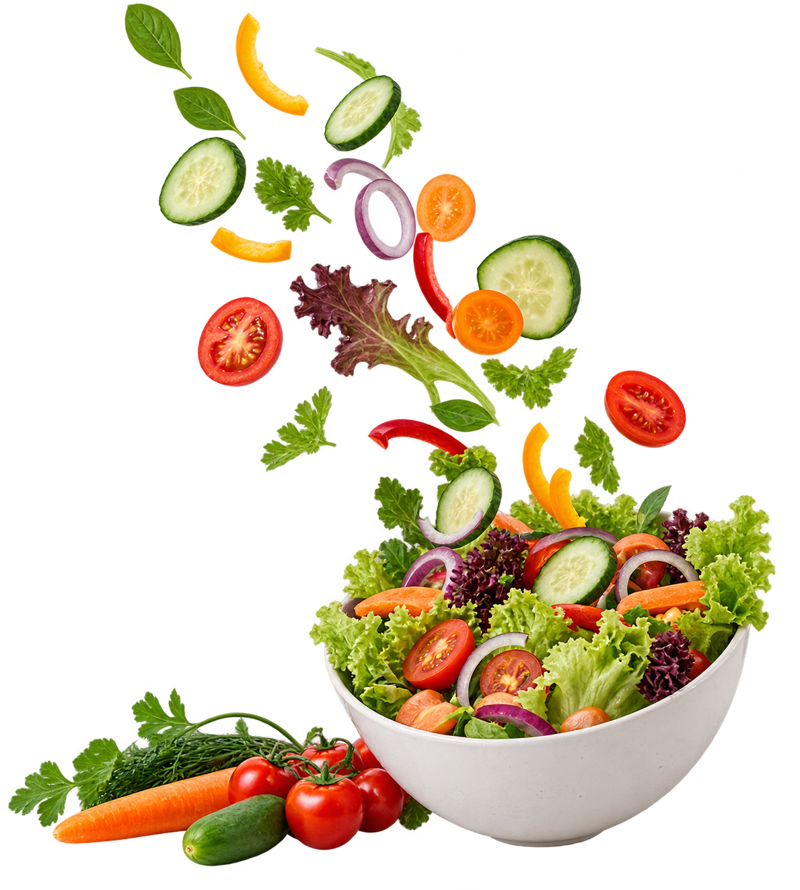

Keputusan hari ini
Perlu ditinjau

Keamanan pangan
Suhu lemari dingin
Menu hari ini
| Makanan | Berat | Kalori |
|---|
Gizi menu
Susun menu satu porsi. Nilai gizi dihitung dari berat tiap makanan.
| Makanan | Berat (g) | Kalori | Protein (g) | Lemak (g) | Serat (g) |
|---|
Penilaian
Pemenuhan terhadap target makan siang
Keamanan pangan
Nilai risiko satu batch makanan dan periksa log suhu penyimpanan.
Penilaian batch
Log suhu lemari dingin
Satu pembacaan per jam, dipisah koma. Batas aman lemari dingin: 5 °C.
Model dan evaluasi
Dua model dilatih di browser dari data sintetis. Angka di bawah mengukur seberapa baik model menirukan aturan pembuat datanya, bukan kinerja di dapur sungguhan.